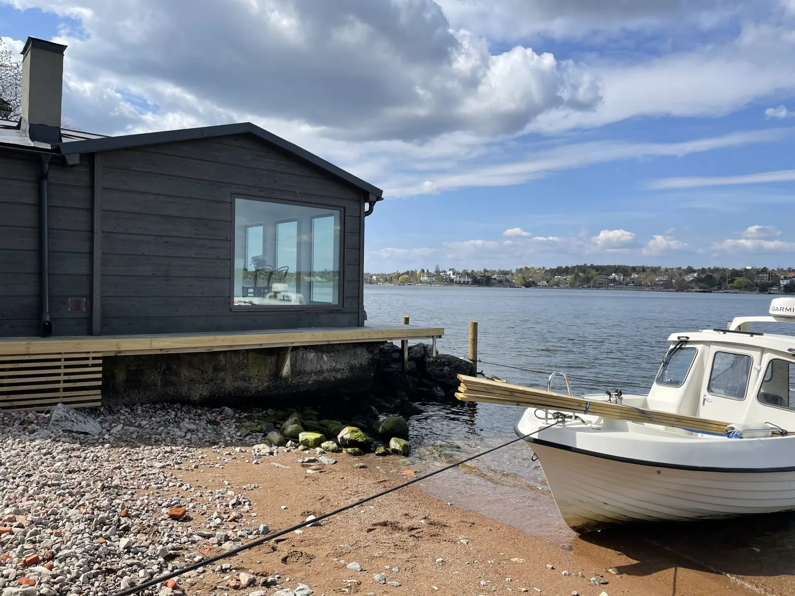
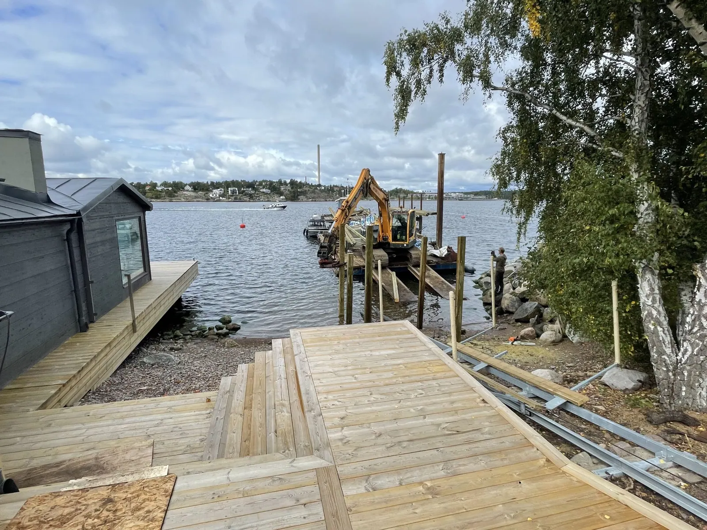
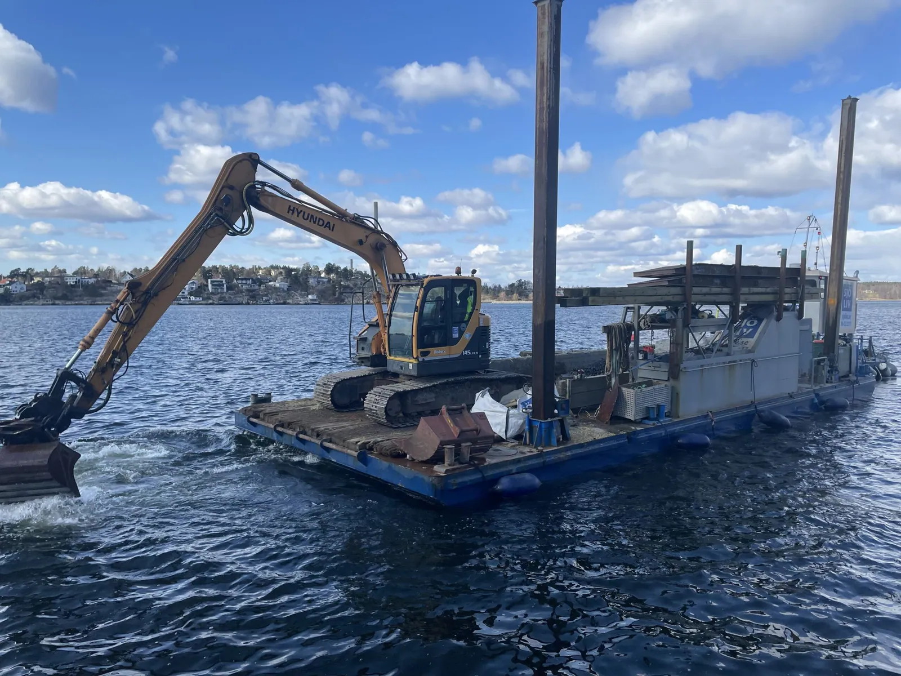
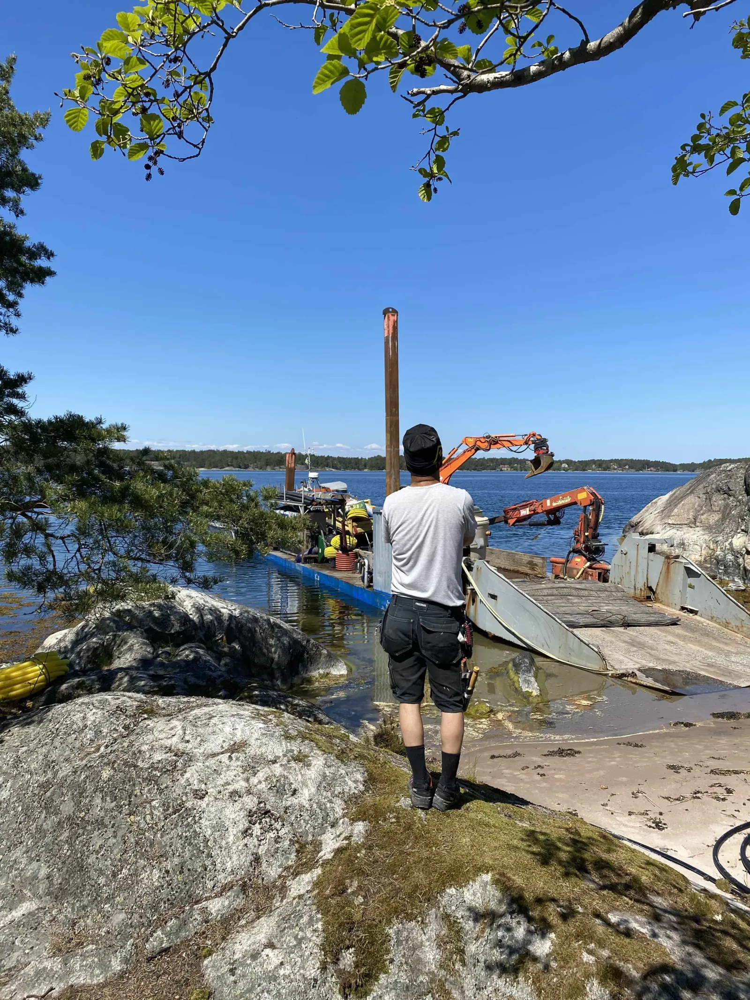
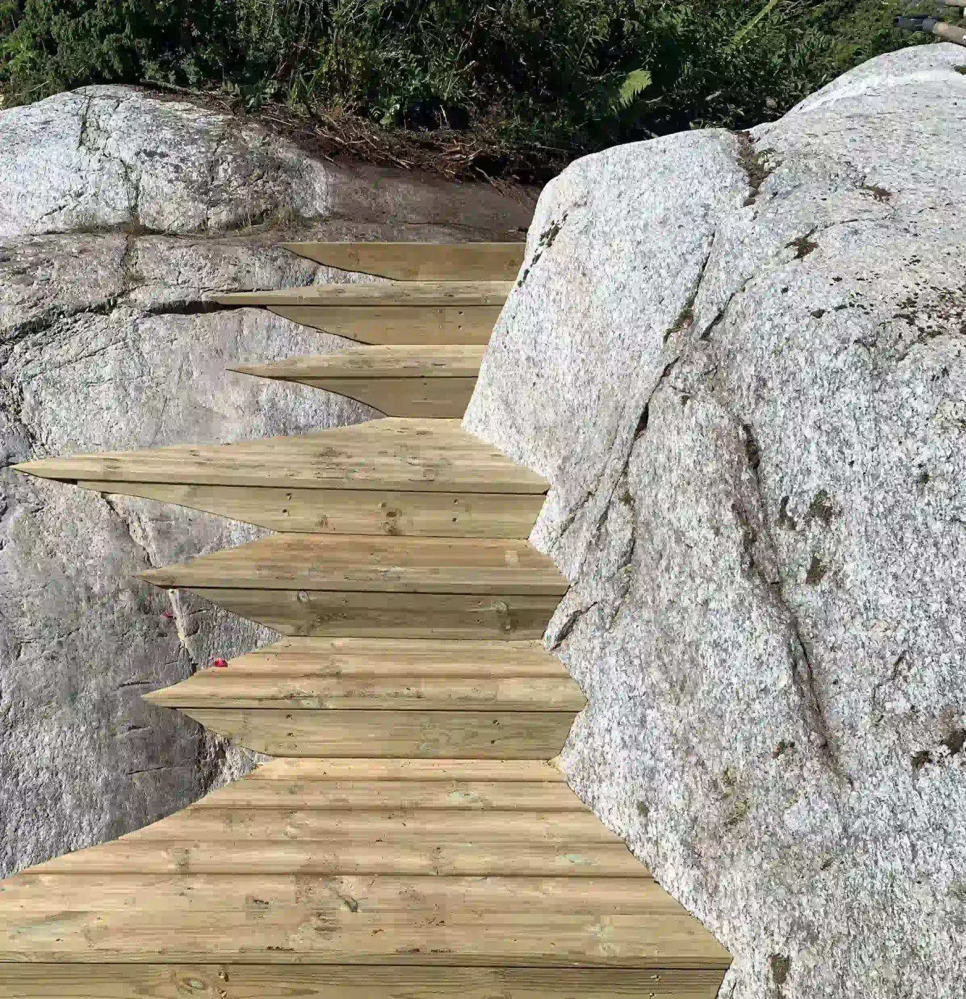
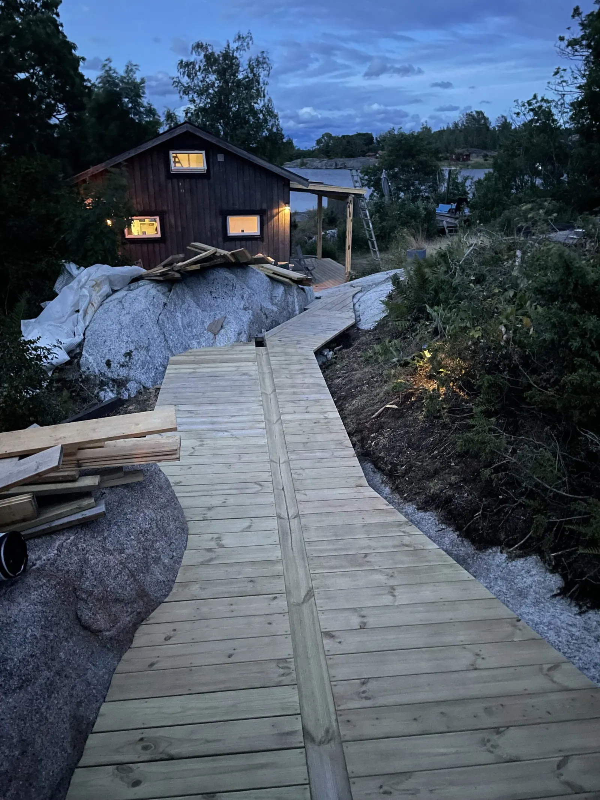

Där land möter vatten.
Från transporten ut till den sista brädan på bryggan. Bilder från byggande och utemiljöer i skärgården.

Skärgård & utemiljö
Bilderna visar ett urval av arbeten.
Kontakta oss om du vill veta mer om ett liknande uppdrag.





Vad vill du
bygga vidare på?
Ett nytt hem, en varsam renovering eller en idé som behöver hitta sin form. Börja med ett samtal med Dennis.
Berätta om ditt projekt 070 898 42 12Ritningar klara eller bara en första tanke?
Du är välkommen i båda fallen.
Du är välkommen i båda fallen.